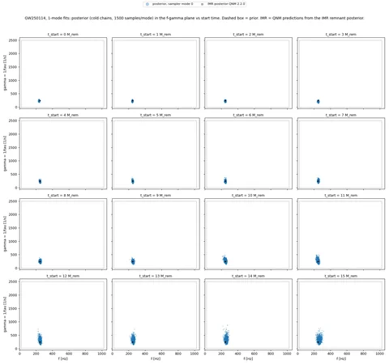
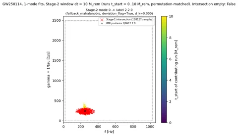
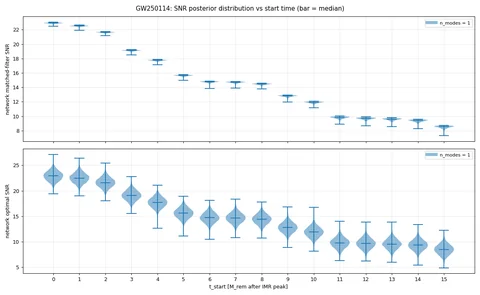
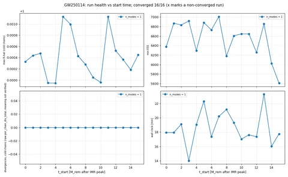

GW250114: 1-mode fits, 16 start times
All 1-mode fits across start times 0..15 M_rem after the IMR peak. Posteriors are the cold chains only. gamma = 1/tau in 1/s; f in Hz.
Stage 2 intersects the permutation-matched posteriors of the runs in a start-time window of width dt = 5 or 10 M_rem from t_start = 0. Stage 3 assigns QNM labels to the intersection modes. Divergence counts are the raw sampler counter; its exact meaning is not verified.
Settings
| n_modes | 1 |
|---|---|
| start times [M_rem] | 0, 1, ..., 15 |
| Stage-2 windows dt [M_rem] | 5, 10 |
Summary figures (5)
{kind=link}

{kind=link}
{kind=link}

{kind=link}

{kind=link}

Stage-3 mode assignment
Every assignment uses fallback_mahalanobis with deviation_flag = true: the conformal prediction point carries no amplitude or phase on real data. Labels come from the ranking d_k = sqrt((f_k/f_220 - 1)^2 + (gamma_k/gamma_220 - 1)^2) of the IMR-predicted QNMs.
| dt [M_rem] | window | Stage-2 mode index | QNM label (l.m.n) | d_k | method | deviation_flag |
|---|---|---|---|---|---|---|
| 5 | t0..t5 M_rem (6 runs) | 0 | 2.2.0 | 0 | fallback_mahalanobis | true |
| 10 | t0..t10 M_rem (11 runs) | 0 | 2.2.0 | 0 | fallback_mahalanobis | true |
IMR-predicted QNMs used for the ranking
| QNM label | f [Hz] | gamma = 1/tau [1/s] | d_k |
|---|---|---|---|
| 2.2.0 | 248.35 | 245.16 | 0 |
Runs (16)
| run | status | n_modes | t_start [M_rem] | f_0 [Hz] | gamma_0 [1/s] | network matched-filter SNR | max R-hat | min ESS | divergences, cold chains (raw) |
|---|---|---|---|---|---|---|---|---|---|
| t0Mf | converged | 1 | 0 | 237.6 (+5.288 / -5.64) | 228.4 (+33.24 / -29.16) | 22.9 (+0.0837 / -0.14) | 1 | 6375 | 0 |
| t1Mf | converged | 1 | 1 | 245.6 (+5.457 / -5.81) | 224.4 (+35.09 / -30.07) | 22.5 (+0.0802 / -0.141) | 1 | 6868 | 0 |
| t2Mf | converged | 1 | 2 | 247.7 (+6.316 / -6.706) | 222.3 (+36.92 / -30.11) | 21.6 (+0.0799 / -0.142) | 1 | 6833 | 0 |
| t3Mf | converged | 1 | 3 | 251.9 (+6.529 / -7.119) | 205.3 (+36.87 / -32.07) | 19.1 (+0.0841 / -0.158) | 0.9999 | 6916 | 0 |
| t4Mf | converged | 1 | 4 | 249.8 (+7.13 / -7.58) | 223.5 (+45.78 / -37.21) | 17.7 (+0.0785 / -0.173) | 0.9999 | 6294 | 0 |
| t5Mf | converged | 1 | 5 | 250.2 (+7.156 / -7.55) | 230.2 (+53.69 / -42.68) | 15.6 (+0.084 / -0.195) | 1.001 | 6883 | 0 |
| t6Mf | converged | 1 | 6 | 249.9 (+7.5 / -7.877) | 233.8 (+56.77 / -47.09) | 14.8 (+0.0874 / -0.207) | 1.001 | 6729 | 0 |
| t7Mf | converged | 1 | 7 | 252.5 (+8.253 / -8.757) | 240.1 (+62.28 / -49.31) | 14.7 (+0.0873 / -0.206) | 1 | 7008 | 0 |
| t8Mf | converged | 1 | 8 | 251.4 (+9.693 / -10.93) | 242.5 (+65.11 / -49.74) | 14.5 (+0.0938 / -0.212) | 1 | 6180 | 0 |
| t9Mf | converged | 1 | 9 | 253.5 (+10.73 / -12.34) | 230.2 (+69.19 / -53.12) | 12.8 (+0.105 / -0.24) | 1 | 6605 | 0 |
| t10Mf | converged | 1 | 10 | 249.8 (+12.05 / -14.22) | 265.5 (+93.6 / -70.09) | 11.9 (+0.117 / -0.251) | 1 | 6645 | 0 |
| t11Mf | converged | 1 | 11 | 248.9 (+12.43 / -15.32) | 257.4 (+116.9 / -79.46) | 9.83 (+0.148 / -0.317) | 1.001 | 6643 | 0 |
| t12Mf | converged | 1 | 12 | 251.4 (+12.44 / -14.83) | 292.5 (+141.6 / -95.4) | 9.69 (+0.152 / -0.323) | 1.001 | 6255 | 0 |
| t13Mf | converged | 1 | 13 | 256 (+14.28 / -15.99) | 301 (+159.6 / -97.75) | 9.58 (+0.145 / -0.339) | 1 | 6854 | 0 |
| t14Mf | converged | 1 | 14 | 259.6 (+17.9 / -18.27) | 306.9 (+175.2 / -104.4) | 9.39 (+0.15 / -0.359) | 1 | 6025 | 0 |
| t15Mf | converged | 1 | 15 | 264.2 (+22.82 / -20.57) | 297.1 (+179.9 / -104.8) | 8.53 (+0.163 / -0.419) | 1 | 5608 | 0 |